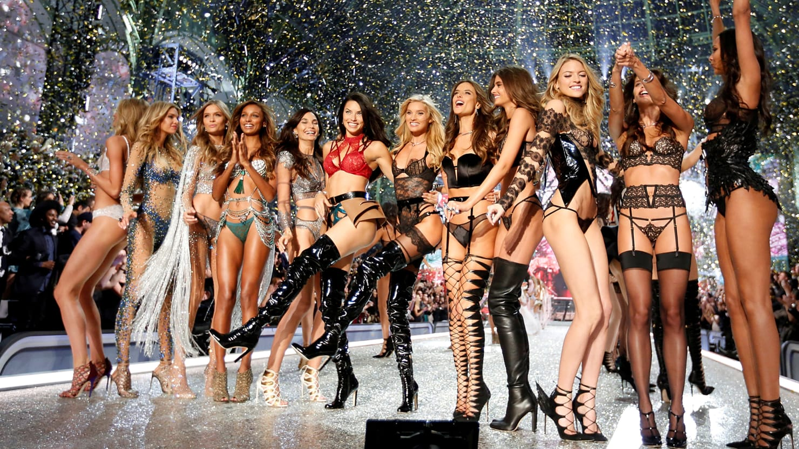

This fashion blog is built during the summer break for demonstration of my personal skills to show people how I design a webpage. I used the pictures from google just to show the models I really like. Fashion has always been my passion. Even if people don't fully understand it, I still believe that fashion plays a very important part of our daily life and the soceity
Famous Quotes from Fashion industry
“Fashion is part of the daily air and it changes all the time, with all the events. You can even see the approaching of a revolution in clothes. You can see and feel everything in clothes.” —Diana Vreeland "Don't be into trends. Don't make fashion own you, but you decide what you are, what you want to express by the way you dress and the way to live." —Gianni Versace "Style is something each of us already has, all we need to do is find it." —Diane von Furstenberg "Anyone can get dressed up and glamorous, but it is how people dress in their days off that are the most intriguing." —Alexander Wang
